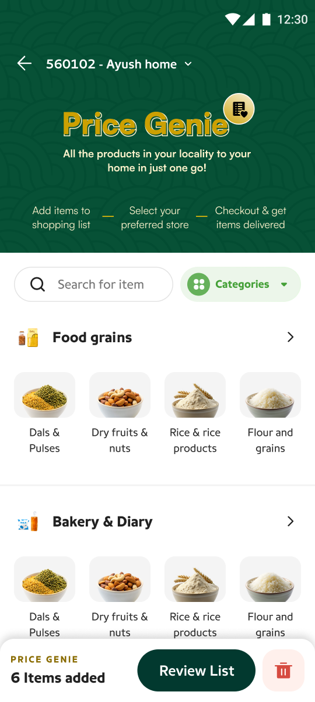
Product discovery ·pg-landing.png
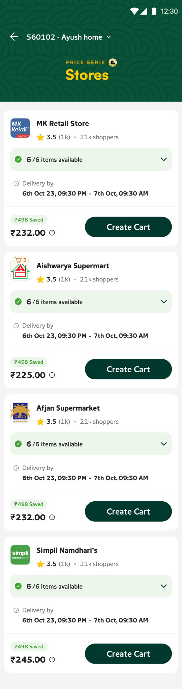
Store comparison ·stores-list.png
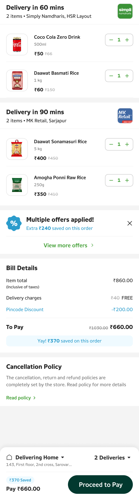
Multi-store cart ·cart-groups.png
The three surfaces this case study is about: discovering products, comparing fulfilment, and understanding the resulting basket.
02 — Context
Pincode was built around stores.
Pincode is a hyperlocal shopping app. Like most commerce products, it followed the model ecommerce has used for decades: pick a store, then shop inside it.
The model worked—unevenly. Grocery held a 49% share and Food 34%, while penetration across other categories stayed low. Whatever a user could discover was bounded by whichever store they happened to open first.
They care about finding the products they need, at a good price, with a good delivery promise. The store is a means to that end—yet it was the first and most binding decision in the flow.
The store-first model was becoming a constraint on product discovery.
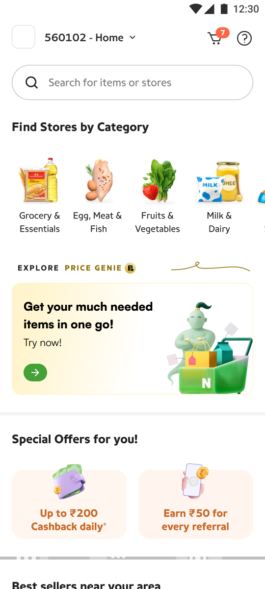
Store-first home ·home.png
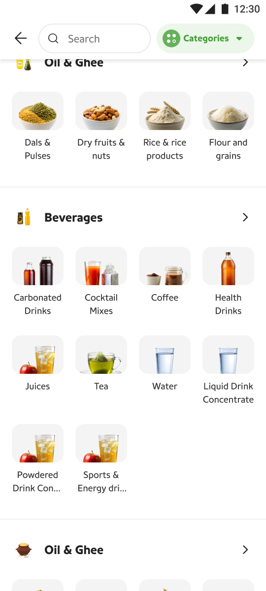
Category browse ·categories.png
The original entry points: pick a store, or browse a category that still resolves to one store’s shelf.
03 — Problem
The problem wasn’t the cart. It was the shopping model.
When users begin by choosing a store, their product discovery is constrained by that store’s inventory. The moment the store doesn’t have something, every path forward costs the user:
None of these are interface failures. A better cart, a better search bar, a better store page—none of them fix a sequence that forces the least-informed decision first. The problem was systemic, and it needed a model-level answer.
04 — Opportunity
What if we reversed the model?
Store First
Price Genie
Instead of asking users where they wanted to shop, Price Genie started with what they wanted to buy. Store-first discovery is bounded by one store’s shelf and pushes every gap onto the user; item-first discovery is bounded by the whole marketplace, and the system absorbs the gaps.
05 — Hypothesis
Could item-first shopping help users build better baskets?
This was an experiment, not a redesign. We wanted to understand whether users would:
Add more of the products they actually need
If adding an item no longer commits you to a store, the basket should converge on the real shopping list—not the subset one store happens to carry.
Consider multiple stores if it improved fulfilment
Store loyalty on hyperlocal platforms is thin. Would users accept fulfilment from unfamiliar stores when availability, price, and delivery were clearly better?
Trade store preference for better price and delivery
The model only works if the comparison surface makes the trade obvious—users won’t abandon a known store for an abstract promise.
Complete larger baskets without increasing cancellations
Bigger baskets are only commercially healthy if the marketplace can actually fulfil them. Cancellations were the guardrail metric for the whole experiment.
06 — Metrics we tracked
We measured three things.
Each hypothesis mapped to a measurable question. These are the metrics the experiment instrumented—grouped by what they answer.
Discovery asks: are users able to find more of what they need? Fulfilment asks: can the marketplace actually serve those baskets? Business asks: does the new model create commercially healthy orders?
The fulfilment metrics are the interesting ones. Item-first shopping is only viable if enough nearby stores can cover all—or nearly all—of a typical basket. N−1 and N−2 coverage told us how often the model would need multi-store fulfilment to keep its promise.
07 — System
The user shouldn’t have to understand the complexity underneath.
Behind one decision surface, Price Genie evaluates the possible fulfilment combinations across nearby stores—availability, price, delivery, and offers—and presents the information users need to make a confident choice.
User needs
6 products
Price Genie evaluates nearby stores
Presented to the user
Best options
Outcome
Cart
Every design decision that follows is an application of this principle: collapse what the user doesn’t need, expand what helps them choose, and never hide what they’re accountable for.
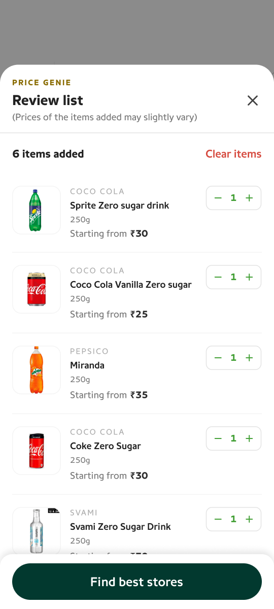
Review list, then “Find best stores” ·review-list.png
The store-agnostic list is the input the engine evaluates against every nearby store at once.
Design decision 01 — Fulfilment at a glance
Start with the store that can fulfil the whole basket.
When a store can fulfil 100% of the requested items, we collapse the details and make the fulfilment status immediately scannable.
Schematic of the collapsed store card. Values illustrative.
The reasoning: users don’t need to inspect six individual products if the store already satisfies the entire basket. The only questions left are when, how much, and what do I save—so those are the only things the collapsed card shows.
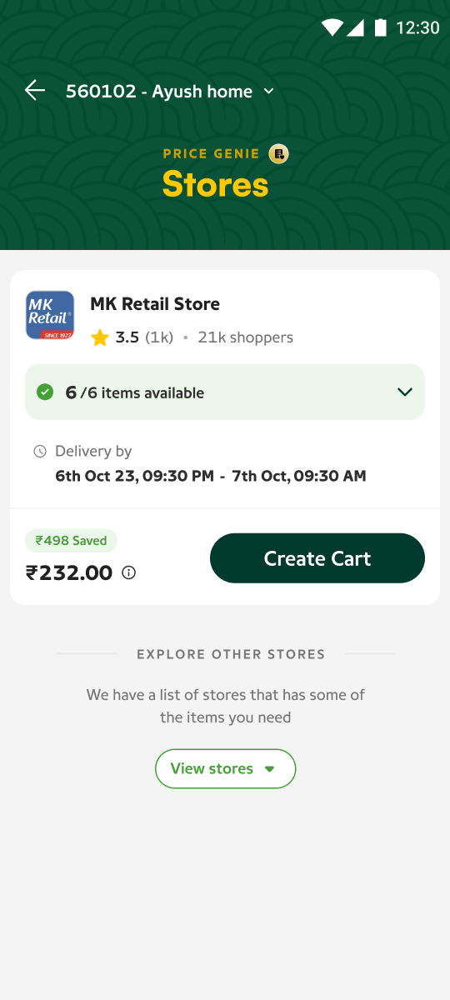
Collapsed full-fulfilment card ·store-collapsed.png
Design decision 02 — Inventory on demand
Expand only when comparison is useful.
Partial-fulfilment stores are where users actually have to think. Expanding a store gives them a quick inventory snapshot—which items it has, which it doesn’t, at what price—without taking them away from the comparison experience.
Schematic of the expanded state. The missing item is named, not hidden.
Availability, price, and delivery are the primary decision variables—so the expanded state is built entirely from them. The card expands in place: comparison is a state of the list, not a separate screen, because leaving the list resets the user’s mental ranking of the options.
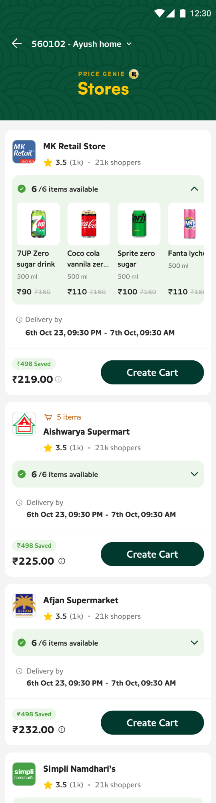
Expanded inventory snapshot ·store-expanded.png
Design decision 03 — Item-first, store-transparent
Item-first doesn’t mean store-blind.
The system could have gone further—fully abstracting stores away and just delivering “the basket.” We deliberately didn’t. Even though discovery begins with products, fulfilment stays transparent. At every step users can see:
- which store fulfils the order
- how quickly it arrives
- what the final price is
- what savings are applied
This is a trust principle, not a layout choice. When something goes wrong with an order—a delay, a substitution—the user needs to know who is responsible for what. A system that hides the fulfilling store buys simplicity now and pays for it in the first support ticket.
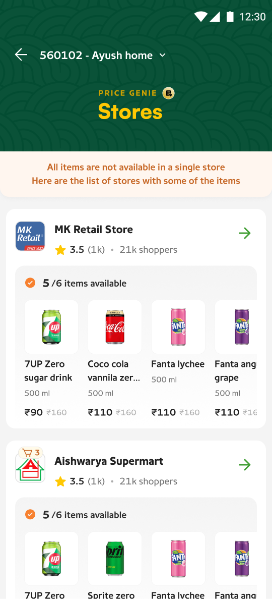
Partial-fulfilment, named honestly ·stores-partial.png
When no single store covers the list, the system says so plainly rather than quietly dropping items.
Design decision 04 — The multi-store cart
Once the basket spans stores, the cart needs a new mental model.
The multi-store cart is a consequence of the model, not the innovation itself. When no single store can serve the whole list well, the best basket spans stores—and the cart has to stop pretending otherwise.
The cart was no longer simply a list of products. It became a representation of how the order would actually be fulfilled.
Delivery in 60 min
Delivery in 90 min
Schematic of the multi-store cart, grouped by delivery. Items illustrative.
We grouped by delivery, with the store named inside each group—not the other way around. Delivery time is what the user plans their day around; the store is the answer to “who is bringing it.” Merging delivery and slot context into the group header meant one glance answers both “what arrives” and “when.”
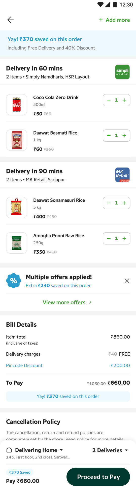
The multi-store cart ·cart-full.png
Design decision 05 — Delivery & slots
Make delivery complexity visible, but easy to scan.
When an order is fulfilled by multiple stores, users need immediate visibility into three things: where the order is coming from, what arrives when, and which items belong to each delivery.
The discipline was in what we didn’t show. Routing, store handoffs, slot allocation logic—all of it stayed backstage. The goal is clarity about the user’s own order, not a window into marketplace operations. Each delivery group reads like a small promise: these items, this store, this time.
cart-groups.png
Design decision 06 — Offers & savings
Make the payoff tangible.
Item-first shopping asks users to change a habit. The system has to keep showing them why it’s worth it.
Schematic of the savings treatment at cart level. Values illustrative.
When users are comparing stores and fulfilment options, savings become part of the decision. We surfaced value throughout the experience—on comparison cards, in the cart, at confirmation—instead of burying it inside the bill. The offer engine stopped being a checkout footnote and became a decision input.
cart-full.png
14 — The final experience
From need → basket → fulfilment.
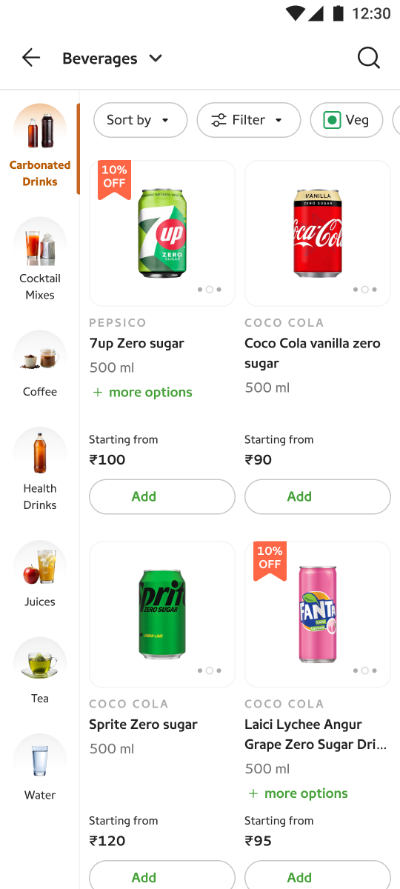
browse-beverages.png
stores-list.png
store-expanded.png
cart-groups.png
cart-full.png
The end-to-end flow, in shipped product screens.
15 — Experiment
We weren’t redesigning a cart. We were testing a new shopping behaviour.
The core question the experiment was built to answer:
The experiment instrumented the metrics defined up front—items added, store fulfilment coverage, cart value, and cancellations. I’m deliberately not publishing outcome numbers here: this was an internal experiment, and directional claims without the underlying data would be exactly the kind of portfolio inflation this page avoids.
What I can speak to honestly is what we observed qualitatively while the experiment ran—which is the next section.
16 — Learnings
The biggest learning wasn’t about the cart.
Each learning below is labelled by its evidence level—what we observed directly, what the work taught us, and what still needs a test.
Users care more about finding the right products than choosing a specific store.
Session after session, store choice was instrumental. Users engaged with the comparison surface as a means to complete their list, not to browse merchants.
Multi-store fulfilment is acceptable when the value is clear.
Users didn’t reject split deliveries outright—they weighed them. When the payoff (availability or savings) was visible next to the cost (a second delivery window), the trade was made willingly.
Marketplace complexity needs to stay behind a simple decision surface.
Every time backend complexity leaked into the interface—slot logic, partial matches, offer conditions—decision confidence dropped. The collapse/expand pattern existed to manage exactly this.
Price, availability and delivery are one decision, not three.
Users never evaluated these factors independently. A great price with a missing item isn’t a great price. The comparison card had to present them as a single fulfilment proposition.
Where the model breaks: basket sizes the marketplace can’t cover.
The N−1 / N−2 coverage question—how often nearby supply can genuinely serve a full basket—determines whether item-first scales beyond dense areas. That’s a supply question as much as a design one.
17 — Reflection
Designing the interface was only half the problem.
Price Genie taught me that marketplace UX isn’t just about helping users navigate products. It’s about making the underlying complexity of supply, fulfilment, price and delivery understandable enough for users to make confident choices.
The design work that mattered most never looked like design: deciding what the system should evaluate versus what the user should decide, where complexity earns its place on screen, and what a cart even is when fulfilment spans stores. The interface was the last mile of a strategy argument.